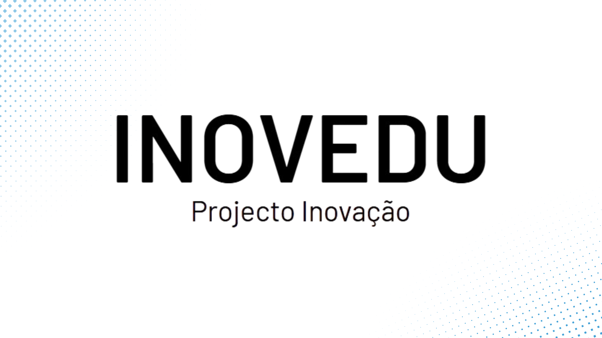

INOVEDU – Promover o Sucesso Académico na Faculdade de Engenharia
Financiado pelo PRR – Plano de Recuperação e Resiliência, o INOVEDU é um programa adotado pela Faculdade de Engenharia da Universidade Lusófona, com o objetivo de promover o sucesso académico dos seus estudantes.
Este programa integra três projetos distintos:
- INOVEDU Mentor
- INOVEDU Inovação Pedagógica
- INOVEDU Monitorização da Integração e Sucesso Escolar
A Faculdade de Engenharia implementou o projeto INOVEDU Mentor, com o intuito de fomentar a criação de mecanismos eficazes de apoio à integração académica dos novos estudantes, promovendo o seu sucesso através de processos de mentoria e acompanhamento por parte de docentes e colegas. Este apoio incide particularmente nas componentes práticas de autoaprendizagem, trabalho colaborativo e promoção da inclusão.
Eixos do Projeto INOVEDU Mentor
Programa Buddy
O Programa Buddy tem como principal objetivo facilitar a integração dos novos estudantes e incentivar a sua participação ativa e responsável na vida universitária.
O Buddy é um estudante voluntário que acompanha os novos colegas nos primeiros tempos do seu percurso académico, ajudando-os a conhecer o funcionamento da Universidade, os seus serviços e dinâmicas.
Programa de Mentoria
O Programa de Mentoria visa reforçar o apoio académico personalizado, promovendo o sucesso dos estudantes que dele necessitem ou o solicitem.
O/a Estudante Mentor/a assume um papel de orientação e acompanhamento ao nível das aprendizagens, apoiando o desenvolvimento académico dos mentorandos de forma próxima e contínua.
Estrutura do Programa
- Mentorandos/as: novos estudantes da Faculdade de Engenharia que beneficiam do acompanhamento e apoio proporcionado pelos mentores.
- Mentores/as: estudantes mais experientes que acompanham os mentorandos/as, oferecendo apoio académico, esclarecimentos e incentivo ao longo do seu percurso.
- Tutores/as: docentes responsáveis por cada curso, que prestam apoio aos mentores e mentorandos, e funcionam como referência académica.
- Pivot do Projeto: coordenador do projeto INOVEDU Mentor na Faculdade de Engenharia, garantindo a articulação e operacionalização de todas as atividades.
O foco central do programa está nos/as mentorandos/as, assegurando a sua plena integração na comunidade académica da Universidade Lusófona e contribuindo diretamente para o seu sucesso académico e pessoal.
Monitorização da Integração e Sucesso Escolar
O INOVEDU também inclui a monitorização contínua da integração dos estudantes e a avaliação do seu sucesso académico. Este processo de monitorização é realizado através da criação de mecanismos de predição de situações de risco, permitindo uma intervenção atempada para prevenir o abandono escolar.
O foco principal está na integração dos estudantes do 1.º ano, visando a redução do insucesso e a promoção do sucesso académico.